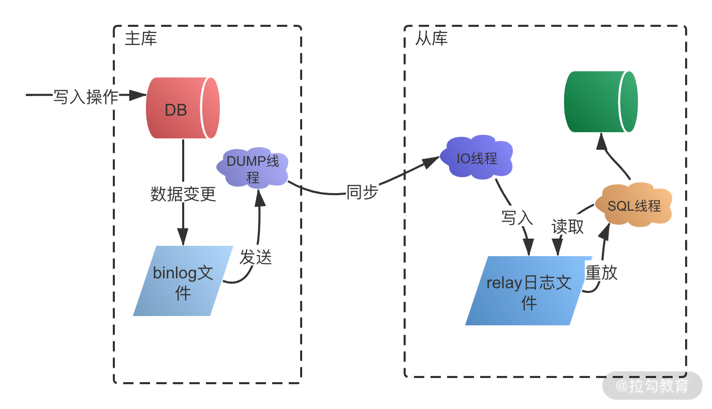

- 00 开篇词：搭建分布式知识体系，挑战高薪 Offer.md.html
- 01 如何证明分布式系统的 CAP 理论？.md.html
- 02 不同数据一致性模型有哪些应用？.md.html
- 03 如何透彻理解 Paxos 算法？.md.html
- 04 ZooKeeper 如何保证数据一致性？.md.html
- 05 共识问题：区块链如何确认记账权？.md.html
- 06 如何准备一线互联网公司面试？.md.html
- 07 分布式事务有哪些解决方案？.md.html
- 08 对比两阶段提交，三阶段协议有哪些改进？.md.html
- 09 MySQL 数据库如何实现 XA 规范？.md.html
- 10 如何在业务中体现 TCC 事务模型？.md.html
- 11 分布式锁有哪些应用场景和实现？.md.html
- 12 如何使用 Redis 快速实现分布式锁？.md.html
- 13 分布式事务考点梳理 + 高频面试题.md.html
- 14 如何理解 RPC 远程服务调用？.md.html
- 15 为什么微服务需要 API 网关？.md.html
- 16 如何实现服务注册与发现？.md.html
- 17 如何实现分布式调用跟踪？.md.html
- 18 分布式下如何实现配置管理？.md.html
- 19 容器化升级对服务有哪些影响？.md.html
- 20 ServiceMesh：服务网格有哪些应用？.md.html
- 21 Dubbo vs Spring Cloud：两大技术栈如何选型？.md.html
- 22 分布式服务考点梳理 + 高频面试题.md.html
- 23 读写分离如何在业务中落地？.md.html
- 24 为什么需要分库分表，如何实现？.md.html
- 25 存储拆分后，如何解决唯一主键问题？.md.html
- 26 分库分表以后，如何实现扩容？.md.html
- 27 NoSQL 数据库有哪些典型应用？.md.html
- 28 ElasticSearch 是如何建立索引的？.md.html
- 29 分布式存储考点梳理 + 高频面试题.md.html
- 30 消息队列有哪些应用场景？.md.html
- 31 集群消费和广播消费有什么区别？.md.html
- 32 业务上需要顺序消费，怎么保证时序性？.md.html
- 33 消息幂等：如何保证消息不被重复消费？.md.html
- 34 高可用：如何实现消息队列的 HA？.md.html
- 35 消息队列选型：Kafka 如何实现高性能？.md.html
- 36 消息队列选型：RocketMQ 适用哪些场景？.md.html
- 37 消息队列考点梳理 + 高频面试题.md.html
- 38 不止业务缓存，分布式系统中还有哪些缓存？.md.html
- 39 如何避免缓存穿透、缓存击穿、缓存雪崩？.md.html
- 40 经典问题：先更新数据库，还是先更新缓存？.md.html
- 41 失效策略：缓存过期都有哪些策略？.md.html
- 42 负载均衡：一致性哈希解决了哪些问题？.md.html
- 43 缓存高可用：缓存如何保证高可用？.md.html
- 44 分布式缓存考点梳理 + 高频面试题.md.html
- 45 从双十一看高可用的保障方式.md.html
- 46 高并发场景下如何实现系统限流？.md.html
- 47 降级和熔断：如何增强服务稳定性？.md.html
- 48 如何选择适合业务的负载均衡策略？.md.html
- 49 线上服务有哪些稳定性指标？.md.html
- 50 分布式下有哪些好用的监控组件？.md.html
- 51 分布式下如何实现统一日志系统？.md.html
- 52 分布式路漫漫，厚积薄发才是王道.md.html
- 捐赠
23 读写分离如何在业务中落地？
本课时我们来探讨读写分离如何在业务中落地。
读写分离是业务开发中常用的技术手段，在面试中也是热点问题，今天我们要讲的是在什么业务场景下需要读写分离，读写分离实现的机制，以及实际生产中应用读写分离要注意的问题。
什么时候需要读写分离
互联网大部分业务场景都是读多写少的，对于电商等典型业务，读和写的请求对比可能差了不止一个数量级。为了不让数据库的读成为业务瓶颈，同时也为了保证写库的成功率，一般会采用读写分离的技术来保证。
读写分离顾名思义，就是分离读库和写库操作，从 CRUD 的角度，主数据库处理新增、修改、删除等事务性操作，而从数据库处理 SELECT 查询操作。具体的实现上，可以有一主一从，一个主库配置一个从库；也可以一主多从，也就是一个主库，但是配置多个从库，读操作通过多个从库进行，支撑更高的读并发压力。
读写分离的实现是把访问的压力从主库转移到从库，特别在单机数据库无法支撑并发读写，并且业务请求大部分为读操作的情况下。如果业务特点是写多读少，比如一些需要动态更新的业务场景，应用读写分离就不合适了，由于 MySQL InnoDB 等关系型数据库对事务的支持，使得写性能不会太高，一般会选择更高性能的 NoSQL 等存储来实现。
MySQL 主从复制技术
读写分离是基于主从复制架构实现的，下面介绍一下 MySQL 中的主从复制技术。
binlog 日志
MySQL InnoDB 引擎的主从复制，是通过二进制日志 binlog 来实现。除了数据查询语句 select 以外，binlog 日志记录了其他各类数据写入操作，包括 DDL 和 DML 语句。
binlog 有三种格式：Statement、Row 及 Mixed。
- Statement 格式，基于 SQL 语句的复制
在 Statement 格式中，binlog 会记录每一条修改数据的 SQL 操作，从库拿到后在本地进行回放就可以了。
- Row 格式，基于行信息复制
Row 格式以行为维度，记录每一行数据修改的细节，不记录执行 SQL 语句的上下文相关的信息，仅记录行数据的修改。假设有一个批量更新操作，会以行记录的形式来保存二进制文件，这样可能会产生大量的日志内容。
- Mixed 格式，混合模式复制
Mixed 格式，就是 Statement 与 Row 的结合，在这种方式下，不同的 SQL 操作会区别对待。比如一般的数据操作使用 row 格式保存，有些表结构的变更语句，使用 statement 来记录。
主从复制过程
MySQL 主从复制过程如下图所示：

- 主库将变更写入 binlog 日志，从库连接到主库之后，主库会创建一个log dump 线程，用于发送 bin log 的内容。
- 从库开启同步以后，会创建一个 IO 线程用来连接主库，请求主库中更新的 bin log，I/O 线程接收到主库 binlog dump 进程发来的更新之后，保存在本地 relay 日志中。
- 接着从库中有一个 SQL 线程负责读取 relay log 中的内容，同步到数据库存储中，也就是在自己本地进行回放，最终保证主从数据的一致性。
读写分离要注意的问题
分布式系统通过主从复制实现读写分离，解决了读和写操作的性能瓶颈问题，但同时也增加了整体的复杂性。我们看一下引入主从复制后，额外需要注意哪些问题。
主从复制下的延时问题
由于主库和从库是两个不同的数据源，主从复制过程会存在一个延时，当主库有数据写入之后，同时写入 binlog 日志文件中，然后从库通过 binlog 文件同步数据，由于需要额外执行日志同步和写入操作，这期间会有一定时间的延迟。特别是在高并发场景下，刚写入主库的数据是不能马上在从库读取的，要等待几十毫秒或者上百毫秒以后才可以。
在某些对一致性要求较高的业务场景中，这种主从导致的延迟会引起一些业务问题，比如订单支付，付款已经完成，主库数据更新了，从库还没有，这时候去从库读数据，会出现订单未支付的情况，在业务中是不能接受的。
为了解决主从同步延迟的问题，通常有以下几个方法。
- 敏感业务强制读主库
在开发中有部分业务需要写库后实时读数据，这一类操作通常可以通过强制读主库来解决。
- 关键业务不进行读写分离
对一致性不敏感的业务，比如电商中的订单评论、个人信息等可以进行读写分离，对一致性要求比较高的业务，比如金融支付，不进行读写分离，避免延迟导致的问题。
主从复制如何避免丢数据
假设在数据库主从同步时，主库宕机，并且数据还没有同步到从库，就会出现数据丢失和不一致的情况，虽然这是一个极端场景，一般不会发生，但是 MySQL 在设计时还是考虑到了。
MySQL 数据库主从复制有异步复制、半同步复制和全同步复制的方式。
- 异步复制
异步复制模式下，主库在接受并处理客户端的写入请求时，直接返回执行结果，不关心从库同步是否成功，这样就会存在上面说的问题，主库崩溃以后，可能有部分操作没有同步到从库，出现数据丢失问题。
- 半同步复制
在半同步复制模式下，主库需要等待至少一个从库完成同步之后，才完成写操作。主库在执行完客户端提交的事务后，从库将日志写入自己本地的 relay log 之后，会返回一个响应结果给主库，主库确认从库已经同步完成，才会结束本次写操作。相对于异步复制，半同步复制提高了数据的安全性，避免了主库崩溃出现的数据丢失，但是同时也增加了主库写操作的耗时。
- 全同步复制
全同步复制指的是在多从库的情况下，当主库执行完一个事务，需要等待所有的从库都同步完成以后，才完成本次写操作。全同步复制需要等待所有从库执行完对应的事务，所以整体性能是最差的。
总结
今天分享了读写分离的业务场景，MySQL 的主从复制技术，包括 binlog 的应用、主从复制的延时问题、数据库同步的不同机制等。
读写分离只是分布式性能优化的一个手段，不是任何读性能瓶颈都需要使用读写分离，除了读写分离，还可以进行分库分表，以及利用缓存，文件索引等 NoSQL 数据库来提高性能，这些内容在后面的课时中会讲到。
© 2019 - 2023 Liangliang Lee. Powered by gin and hexo-theme-book.